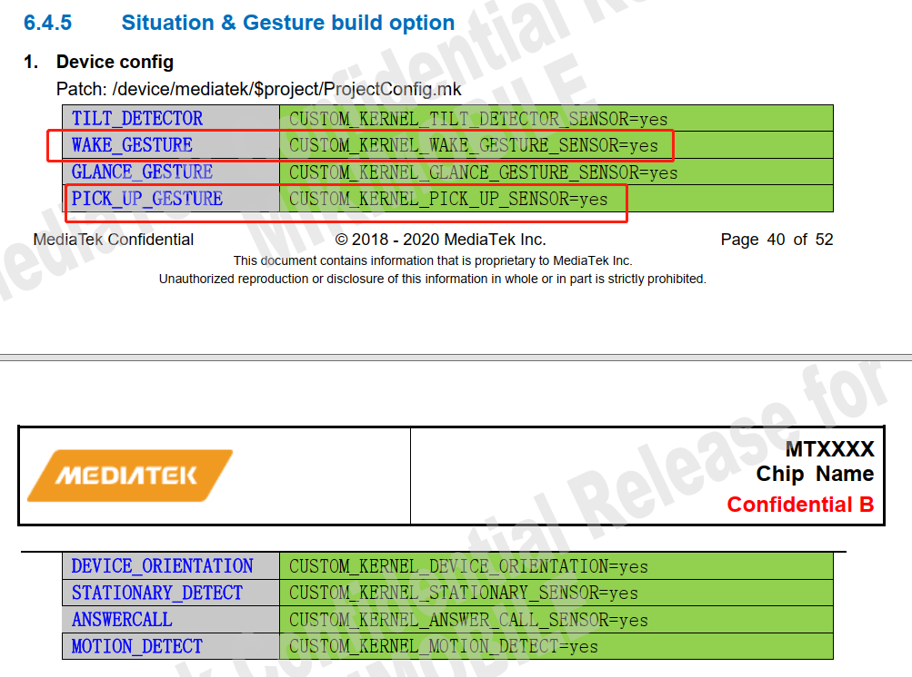
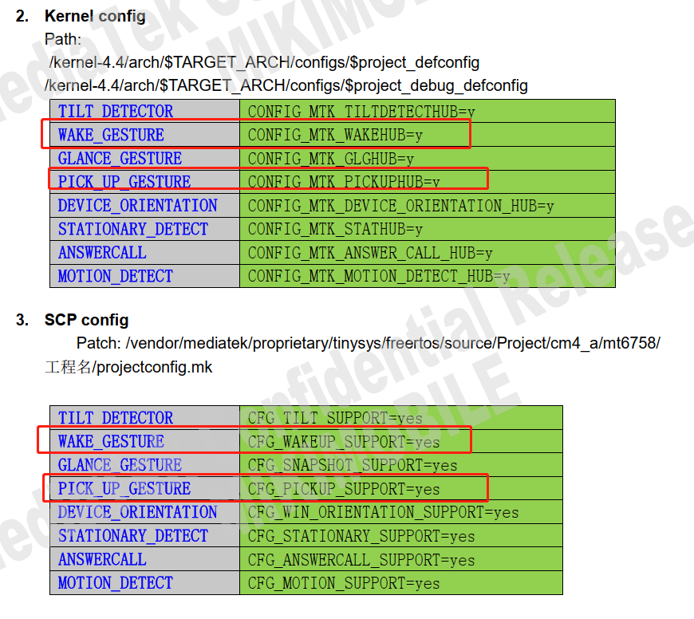
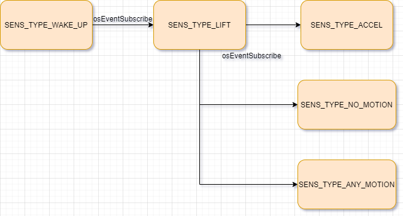

概述
本文主要讲解MTK平台抬起亮屏功能实现。
参考
不考虑功耗参考：
不考虑功耗实现代码
frameworks/base/services/core/java/com/android/server/policy/PhoneWindowManager.java:
--- a/frameworks/base/services/core/java/com/android/server/policy/PhoneWindowManager.java
+++ b/frameworks/base/services/core/java/com/android/server/policy/PhoneWindowManager.java
@@ -243,6 +243,7 @@ import android.hardware.SensorEventListener;
import android.hardware.SensorManager;
import android.graphics.PixelFormat;
import android.view.Gravity;
+import android.app.KeyguardManager;
//[NEW FEATURE]-END by wugangnan@paxsz.com 2021-10-02, for Pocket mode
/**
@@ -696,6 +697,16 @@ public class PhoneWindowManager implements WindowManagerPolicy {
private View mProximityView;
private WindowManager.LayoutParams mProximityParams;
+ private PowerManager.WakeLock mWakelock;
+ private long shakeTime;
+ private long showTime;
+ private Sensor accelerometer;
+ private KeyguardManager km; //声明键盘管理对象
+ private static final String PAX_RAISE_TIME_SYSTEMPRO = "pax.raise.time"; 可以根据属性动态设定
+ private static final int PAX_DEFAULT_RAISE_TIME = 1000;
+ private static final String PAX_MEDUM_VALUE_SYSTEMPRO = "pax.medum.time";
+ private static final int PAX_DEFAULT_MEDUM_VALUE = 8;
+
boolean isProximityScreenEnabled() {
Log.i(TAG, "isProximityScreenEnabled.");
return Settings.System.getInt(mContext.getContentResolver(),
@@ -709,6 +720,7 @@ public class PhoneWindowManager implements WindowManagerPolicy {
mProximitySensorEnabled = true;
mSensorManager.registerListener(mProximitySensorListener, mProximitySensor,
SensorManager.SENSOR_DELAY_UI, mHandler);
+
mScreenOnTime = SystemClock.uptimeMillis();
}
} else {
@@ -800,6 +812,45 @@ public class PhoneWindowManager implements WindowManagerPolicy {
// Not used.
}
};
+
+ private SensorEventListener sensorEventListener = new SensorEventListener() { 加速度传感器监听
+ @Override
+ public void onSensorChanged(SensorEvent event) {
+ float[] values = event.values;
+ float x = values[0];
+ float y = values[1];
+ float z = values[2];
+ int medumValue = SystemProperties.getInt(PAX_MEDUM_VALUE_SYSTEMPRO,PAX_DEFAULT_MEDUM_VALUE);
+
+ if (km != null) {
+ if (km.isKeyguardLocked()) { //是否锁屏，是的话执行
+
+ if (9 < z && -2 < x && x < 2 && -2 < y && y < 2) {
+ showTime = System.currentTimeMillis();
+ Slog.w(TAG,"lay flat time" + showTime);
+ }
+ Slog.w(TAG,"raw data x = " + Math.abs(x) + " y=" + Math.abs(y) + " z=" +Math.abs(z));
+ //if (Math.abs(x) > medumValue || Math.abs(y) > medumValue || Math.abs(z) > medumValue) {
+ if (y > medumValue ) { 抬手亮屏逻辑，只做y轴
+ shakeTime = System.currentTimeMillis();
+ Slog.w(TAG,"raise hand time" + shakeTime);
+ if (0 < shakeTime - showTime && shakeTime - showTime < SystemProperties.getInt(PAX_RAISE_TIME_SYSTEMPRO,PAX_DEFAULT_RAISE_TIME)) {
+ shakeTime = 0;
+ mWakelock.acquire();
+ mWakelock.release();
+ }
+ }
+ } else {
+ Slog.w(TAG,"no screen lock");
+ }
+ }
+ }
+
+ @Override
+ public void onAccuracyChanged(Sensor arg0, int arg1) {
+ }
+ };
+
private void ProximityScreenVolumeDownKeyTriggered(){
if (mScreenshotChordVolumeDownKeyTriggered && !mA11yShortcutChordVolumeUpKeyTriggered) {
if (mProximityScreenShown) {
@@ -2111,11 +2162,6 @@ public class PhoneWindowManager implements WindowManagerPolicy {
mAccessibilityManager = (AccessibilityManager) context.getSystemService(
Context.ACCESSIBILITY_SERVICE);
// register for dock events
IntentFilter filter = new IntentFilter();
filter.addAction(UiModeManager.ACTION_ENTER_CAR_MODE);
@@ -4606,9 +4652,13 @@ public class PhoneWindowManager implements WindowManagerPolicy {
if (isProximityScreenEnabled()) {
setProximitySensorEnabled(true);
mHandler.postDelayed(mPsRunnable, ALS_PS_DELAY);
+ mSensorManager.unregisterListener(sensorEventListener); 在亮屏后注销
}
}else if(Intent.ACTION_SCREEN_OFF.equals(action)){
if (isProximityScreenEnabled()) setProximitySensorEnabled(false);
+
+ mSensorManager.registerListener(sensorEventListener, accelerometer, 灭屏时注册监听
+ SensorManager.SENSOR_DELAY_UI, mHandler);
}
}
@@ -5069,6 +5119,17 @@ public class PhoneWindowManager implements WindowManagerPolicy {
readCameraLensCoverState();
updateUiMode();
mDefaultDisplayRotation.updateOrientationListener();
+
+ //[NEW FEATURE]-BEGIN by wugangnan@paxsz.com 2021-10-02, for Pocket mode read the value of the distance sensor
+ km = (KeyguardManager) mContext.getSystemService(Context.KEYGUARD_SERVICE);//<BB><F1><B5><C3>KeyguardManager<B7><FE><CE><F1>
+ mWakelock = mPowerManager.newWakeLock(PowerManager.ACQUIRE_CAUSES_WAKEUP | PowerManager.SCREEN_BRIGHT_WAKE_LOCK, "bright");
+
+ mSensorManager = (SensorManager) mContext.getSystemService(Context.SENSOR_SERVICE);
+
+ accelerometer = mSensorManager.getDefaultSensor(Sensor.TYPE_ACCELEROMETER);
+ //[NEW FEATURE]-END by wugangnan@paxsz.com 2021-10-02, for Pocket mode read the value of the distance sensor
界面

MtkSettings APP
vendor/mediatek/proprietary/packages/apps/MtkSettings/src/com/android/settings/display/LiftToWakePreferenceController.java:
package com.android.settings.display;
import static android.provider.Settings.Secure.WAKE_GESTURE_ENABLED;
import android.content.Context;
import android.hardware.Sensor;
import android.hardware.SensorManager;
import android.provider.Settings;
import androidx.preference.Preference;
import androidx.preference.SwitchPreference;
import com.android.settings.core.PreferenceControllerMixin;
import com.android.settingslib.core.AbstractPreferenceController;
public class LiftToWakePreferenceController extends AbstractPreferenceController implements
PreferenceControllerMixin, Preference.OnPreferenceChangeListener {
private static final String KEY_LIFT_TO_WAKE = "lift_to_wake";
public LiftToWakePreferenceController(Context context) {
super(context);
}
//该Preference是否可用，获取TYPE_WAKE_GESTURE sensor类型
@Override
public boolean isAvailable() {
SensorManager sensors = (SensorManager) mContext.getSystemService(Context.SENSOR_SERVICE);
return sensors != null && sensors.getDefaultSensor(Sensor.TYPE_WAKE_GESTURE) != null;
}
@Override
public String getPreferenceKey() {
return KEY_LIFT_TO_WAKE;
}
//当Preference的值发生改变时触发该事件，true则以新值更新控件的状态，false则do noting
@Override
public boolean onPreferenceChange(Preference preference, Object newValue) {
boolean value = (Boolean) newValue;
Settings.Secure.putInt(mContext.getContentResolver(), WAKE_GESTURE_ENABLED, value ? 1 : 0);
return true;
}
//每次进入该PreferenceScreen都会调用一次刷新开关状态
@Override
public void updateState(Preference preference) {
int value = Settings.Secure.getInt(mContext.getContentResolver(), WAKE_GESTURE_ENABLED, 0);
((SwitchPreference) preference).setChecked(value != 0);
}
}
参考以下，当该传感器被触发时，设备会开启屏幕，所以只需要监听该传感器即可实现亮屏功能。
唤醒手势传感器
底层物理传感器：未定义（任何低功耗传感器）
报告模式：单次模式
低功耗
仅实现该传感器的唤醒版本。
getDefaultSensor(SENSOR_TYPE_WAKE_GESTURE) 返回唤醒传感器
唤醒手势传感器可以使用特定设备动作来唤醒设备。当该传感器被触发时，设备会开启屏幕，就如同按下电源按钮一样。用户可在设备设置中禁用这种设备行为（当该传感器被触发时开启屏幕）。更改设置不会影响该传感器的行为：仅改变当该传感器被触发时，框架是否会开启屏幕。未指定待感测的实际手势，可由设备制造商进行选择。
该传感器必须具备低功耗特性，因为它可能会全天候启用。
每个传感器事件在 sensors_event_t.data[0] 中报告 1。
Wakeup sensorhub功能开发
1.我们设备需要支持抬起唤醒功能，需要accel sensor一直active的状态。
sensorhub调通了，但是发现scp这边打印gsensor在灭屏是关闭了，如下打印：
[345.976]sc7a20 acc1 rawdata x:-38, y:26, z:-1106
[346.039]sc7a20 acc1 rawdata x:-42, y:25, z:-1105
[346.102]sc7a20 acc1 rawdata x:-45, y:26, z:-1103
[346.164]sc7a20 acc1 rawdata x:-41, y:27, z:-1103
[346.227]sc7a20 acc1 rawdata x:-48, y:23, z:-1101
[346.289]sc7a20 acc1 rawdata x:-53, y:25, z:-1097
[346.352]sc7a20 acc1 rawdata x:-51, y:26, z:-1108
[346.414]sc7a20 acc1 rawdata x:-50, y:24, z:-1112
[346.435]hostintf: 346435403595, chreType:1, rate:15359, latency:100000000, cmd:0!
[346.435]sensorPowerAcc on:0, nowOn:1
[346.435]sc7a20PowerRead
[346.435]sc7a20PowerDisableWrite: 0x47
[346.435]acc: disable done
2.MTK回复如下：
请查收guide文档，抬手亮屏feature具体见6.4.5，打开WAKE_GESTURE及PICK_UP_GESTURE相关宏开关，
注：包含ProjectConfig.mk、Kernel Config、SCP config三部分，
测试方法: Settings -> Display -> Lift to wake开关
参考文档将如下红色框中的宏打开：
 
3.调通后scp打印如下：
1.关屏后acc继续被打开：
[97653.5587]als: disable done
[97653.967]hostintf: 97653967164671, chreType:47, rate:4294967042, latency:0, cmd:0!
[97653.969]hostintf: 97653969452902, chreType:47, rate:4294967042, latency:0, cmd:1!
[97653.969][Wake] Active wake(1) //调用WakePower，激活wake sensor
[97653.969]LiftDetectPower:1
[97653.969]Gesture lib version: eec60996
[97653.969]LIFT INIT DONE
[97653.969]sensorPowerAcc on:1, nowOn:0
[97653.969][qmi8658]: Qmi8658AccPowerOn
[97653.969][Motion] Active anyMotion(1), noMotion(0)
[97653.969][Motion] configAccel on
[97653.969]on or upload, type:1, rate:fffffff0, latency:ffffffffffffffff
[97653.969][Motion] Active anyMotion(1), noMotion(1)
[97653.969]WAKEUP: SUBSCRIBE LIFT SENSOR DONE //订阅lift sensor
[97653.969]acc: enable done
[97653.969]sensorFirmwareAcc
[97653.970]sensorRateAcc rate:51200, latency:200000000
[97653.970]accGyro, delay=19999744, latency:200000000, min_wm=0, final_watermark=10
[97653.970]accGyro, watermark:10
[97653.970][qmi8658]: acc_rate = 51200 water_mark=10 fifo_wmk=10 latency=200000000
[97653.970]acc: ratechg done
2.抬起亮屏触发：
[97826.377]Gesture lib version: eec60996
[97826.377]lift notify
[97826.377][Wake] Active wake(0)
[97826.377]LiftDetectPower:0
[97826.377][Motion] Active anyMotion(0), noMotion(0)
[97826.377][Motion] configAccel off
[97826.377]sensorPowerAcc on:0, nowOn:1
[97826.377][qmi8658]: Qmi8658AccPowerOff
[97826.377]acc: disable done
[97826.381]hostintf: 97826381383774, chreType:47, rate:4294967042, latency:0, cmd:0!
[97826.468]hostintf: 97826468513621, chreType:12, rate:4096, latency:0, cmd:0!
[97826.472]hostintf: 97826472051082, chreType:12, rate:4096, latency:0, cmd:1!
[97826.472]sensorPowerAls on:1, nowOn:0
[97826.472]als: enable done
3.logcat
03-06 17:32:43.107 770 799 E Situation: processEvent, handle:22, flush_action:0
03-06 17:32:43.108 770 799 E Situation: ID_WAKE_GESTURE, handle:22, flush_action:0
03-06 17:32:43.108 770 799 E SensorManager: autoDisable oneshot sensor 22
03-06 17:32:43.108 770 799 I SensorManager: activate: connection=0xb4000072cb1415b0, handle=0x00000016, enabled=0, count=1
03-06 17:32:43.108 770 799 I SensorManager: activate disable index=0
03-06 17:32:43.108 770 799 I SensorManager: activate>>> actuating h/w activate handle=22 enabled=0
03-06 17:32:43.108 770 799 I Situation: enable: handle:22, en:0
03-06 17:32:43.112 1137 3028 D SensorService: 0xb400006fabd26cd0 removeFd fd=333
03-06 17:32:43.112 546 546 I android.hardware.vibrator-service.mediatek: Vibrator reporting capabilities
03-06 17:32:43.112 1137 3028 D SensorService: ~SensorEventConnection(0xb400006fabd26cd0)
03-06 17:32:43.112 1137 3028 D SensorService: 0 active sensors
02-26 04:47:39.192 1141 1160 D PowerManagerService: wakeUpNoUpdateLocked: eventTime=16090116, uid=1000
02-26 04:47:39.192 1141 1160 I PowerManagerService: Waking up from Asleep (uid=1000, reason=WAKE_REASON_GESTURE, details=android.policy:GESTURE)...
02-26 04:47:39.194 1141 1160 D PowerManagerService: Acquiring suspend blocker "PowerManagerService.Broadcasts".
sensorlist如下，其中WAKE_GESTURE和PICK_UP是需要的:
PAYTABLETM8:/ # dumpsys sensorservice
Captured at: 10:14:25.220
Sensor Device:
Total 9 h/w sensors, 9 running 1 disabled clients:
0x00000017) active-count = 1; sampling_period(ms) = {1.0}, selected = 1.00 ms; batching_period(ms) = {0.0}, selected = 0.00 ms
Sensor List:
0x00000001) ACCELEROMETER | MTK | ver: 1 | type: android.sensor.accelerometer(1) | perm: n/a | flags: 0x00000000
continuous | minRate=5.00Hz | maxRate=200.00Hz | no batching | non-wakeUp |
0x00000002) MAGNETOMETER | MTK | ver: 1 | type: android.sensor.magnetic_field(2) | perm: n/a | flags: 0x00000000
continuous | minRate=5.00Hz | maxRate=50.00Hz | no batching | non-wakeUp |
0x00000003) ORIENTATION | MTK | ver: 1 | type: android.sensor.orientation(3) | perm: n/a | flags: 0x00000000
continuous | minRate=50.00Hz | maxRate=200.00Hz | no batching | non-wakeUp |
0x00000011) SIGNIFICANT_MOTION | MTK | ver: 1 | type: android.sensor.significant_motion(17) | perm: n/a | flags: 0x00000005
one-shot | maxDelay=0us | minDelay=-1us | no batching | wakeUp |
0x00000012) STEP_DETECTOR | MTK | ver: 1 | type: android.sensor.step_detector(18) | perm: android.permission.ACTIVITY_RECOGNITION | flags: 0x00000006
special-trigger | maxDelay=0us | minDelay=0us | FIFO (max,reserved) = (4500, 100) events | non-wakeUp |
0x00000013) STEP_COUNTER | MTK | ver: 1 | type: android.sensor.step_counter(19) | perm: android.permission.ACTIVITY_RECOGNITION | flags: 0x00000002
on-change | minRate=1.00Hz | minDelay=0us | no batching | non-wakeUp |
0x00000017) WAKE_GESTURE | MTK | ver: 1 | type: android.sensor.wake_gesture(23) | perm: n/a | flags: 0x00000005
one-shot | maxDelay=0us | minDelay=-1us | no batching | wakeUp |
0x00000019) PICK_UP | MTK | ver: 1 | type: android.sensor.pick_up_gesture(25) | perm: n/a | flags: 0x00000005
one-shot | maxDelay=0us | minDelay=-1us | no batching | wakeUp |
0x00000065) STEP_DETECTOR_WAKEUP | MTK | ver: 1 | type: android.sensor.step_detector(18) | perm: android.permission.ACTIVITY_RECOGNITION | flags: 0x00000007
special-trigger | maxDelay=0us | minDelay=0us | FIFO (max,reserved) = (4500, 100) events | wakeUp |
0x5f67656f) GeoMag Rotation Vector Sensor | AOSP | ver: 3 | type: android.sensor.geomagnetic_rotation_vector(20) | perm: n/a | flags: 0x00000000
continuous | maxDelay=0us | maxRate=200.00Hz | no batching | non-wakeUp |
代码分析
1.sensorhub底层
逻辑图如下：

配置如下：
--- a/vendor/mediatek/proprietary/tinysys/freertos/source/project/CM4_A/mt6765/k62v1_64_pax/ProjectConfig.mk
+++ b/vendor/mediatek/proprietary/tinysys/freertos/source/project/CM4_A/mt6765/k62v1_64_pax/ProjectConfig.mk
@@ -16,13 +16,19 @@ CFG_CHRE_SUPPORT = yes
+CFG_PICKUP_SUPPORT = yes
+CFG_WAKEUP_SUPPORT = yes
project/CM4_A/mt6765/platform/feature_config/chre.mk关联文件，发现抬起亮屏相关的算法都是在wakeup_gesture里面的libwakeupgesture.a库:
######## pickup ########
ifeq ($(CFG_PICKUP_SUPPORT),yes)
C_FILES += $(SOURCE_DIR)/middleware/contexthub/VIRT_Driver/pickup.c
endif
######## wakeup ########
ifeq ($(CFG_WAKEUP_SUPPORT),yes)
C_FILES += $(SOURCE_DIR)/middleware/contexthub/VIRT_Driver/wakeup.c
endif
######## gestureRecognition--LIFT ########
ifeq ($(CFG_LIFT_SUPPORT),yes)
INCLUDES += -I$(SOURCE_DIR)/middleware/contexthub/algo/wakeup_gesture
INCLUDES += -I$(SOURCE_DIR)/middleware/contexthub/VIRT_Driver
C_FILES += $(SOURCE_DIR)/middleware/contexthub/VIRT_Driver/liftDetect.c
C_FILES += $(SOURCE_DIR)/middleware/contexthub/VIRT_Driver/algoDataResample.c
LIBFLAGS += -L$(SOURCE_DIR)/middleware/contexthub/algo/wakeup_gesture -lwakeupgesture
endif
wugn@jcrj-tf-compile:wakeup_gesture$ cat README
NOTICE:
This library contains the Gesture feature that can detect user gesture (lift/glance/put down/flip) in real-time.
The library, libwakeupgesture.a is built and can be linked already.
For people who may like to use these APIs, just includes gesture.h and see the definitions in header file.
gesture.h:
#include <math.h>
#include "gesture.h"
#include "gesture_util.h"
#include "gesture_setting.h"
typedef struct gesture_output {
bool lift_result;
bool original_glance_result;
bool extended_glance_result;
bool put_result;
} gesture_output_t;
void reinit_gesture(mtk_gesture_config_t *, gesture_output_t);
gesture_output_t gesture_enter_point(uint32_t, int32_t, int32_t, int32_t);
void set_gesture_transition(gesture_trans_t);
void ut_gesture_read_config(mtk_gesture_config_t *);
根据log分析，感觉抬起亮屏只和
wakeup.c及liftDetect.c两个有关系。
提取重要打印：
[98765.851][Wake] Active wake(1)
[98765.851]LiftDetectPower:1
[98765.851]Gesture lib version: eec60996
[98765.851]LIFT INIT DONE
[98765.851]sensorPowerAcc on:1, nowOn:0
[98765.851][Motion] Active anyMotion(1), noMotion(0)
[98765.851][Motion] configAccel on
[98765.851]on or upload, type:1, rate:fffffff0, latency:ffffffffffffffff
[98765.851][Motion] Active anyMotion(1), noMotion(1)
[98765.851]WAKEUP: SUBSCRIBE LIFT SENSOR DONE
[98765.851]acc: enable done
[98765.851]sensorRateAcc rate:51200, latency:200000000
wakeup.c:关屏后wake_sensor代码流程，这里主要是订阅EVT_SENSOR_LIFT事件，而lift sensor又主要是订阅了acc sensor和any/no motion sensor,any/no motion sensor主要是配置acc rate，让功耗更低：
* .sensorPower = WakePower,
├── osLog(LOG_INFO, "[Wake] Active wake(%d)\n", on);
└── configLift(true);
└── sensorFind(SENS_TYPE_LIFT, i, &mTask.liftHandle) //找lift sensor
├── sensorRequest(mTask.taskId, mTask.liftHandle, SENSOR_RATE_ONCHANGE, 0)
│ └── sensorReconfig(s, newSensorRate, sensorCalcHwLatency(s));/* update actual sensor if needed */
│ └── if (sensorCallFuncPower(s, true)) {
│ └── osEnqueuePrivateEvt(EVT_APP_SENSOR_POWER, &evt->externalPowerEvt, //这里是打开lift sensor相当于调用LiftDetectPower
│ └── .sensorPower = liftDetectPower,//以下全部都是liftDetect.c
│ ├── liftInit();
│ │ └── reinit_gesture(&config, (gesture_output_t) {1, 0, 0, 0}); //重要，这里是gesture.h 手势库里面的函数，config是gesture_settings.h里，我们都看不到
│ ├── configAccel(true, NORMAL_ACC_WINDOW);
│ │ ├── sensorRequest(mTask.taskId, mTask.accelHandle, ACCEL_MIN_RATE, mTask.accel_normal_latency) //mTask.accel_normal_latency = 50000000ull; 50HZ
│ │ │ └── sensorReconfig(s, newSensorRate, sensorCalcHwLatency(s));
│ │ │ ├── if (sensorCallFuncPower(s, true)) {
│ │ │ │ └── osEnqueuePrivateEvt(EVT_APP_SENSOR_POWER, &evt->externalPowerEvt, //这里是打开acc sensorPowerAcc
│ │ │ └── sensorCallFuncSetRate(s, newHwRate, newHwLatency);
│ │ │ └── osEnqueuePrivateEvt(EVT_APP_SENSOR_SET_RATE, &evt->externalSetRateEvt, //调用acc sc7a20gRate
│ │ └── osEventSubscribe(mTask.taskId, EVT_SENSOR_ACCEL); //订阅acc sensor
│ ├── configAnyMotion(true); //关屏的情况下订阅Motion sensor，
│ │ └── osEventSubscribe(mTask.taskId, EVT_SENSOR_ANY_MOTION);
│ │ └── liftDetectHandleEvent(uint32_t evtType, const void* evtData)
│ │ ├── case EVT_SENSOR_ANY_MOTION: //如果移动了设备，则配置50HZ acc rate
│ │ │ └── configAccel(true, NORMAL_ACC_WINDOW); //如果手机移动了，触发Motion sensor，
│ │ │ ├── if (acc_class == NORMAL_ACC_WINDOW) {
│ │ │ │ ├── sensorRequest(mTask.taskId, mTask.accelHandle, ACCEL_MIN_RATE, mTask.accel_normal_latency) ////mTask.accel_normal_latency = 50000000ull; 50HZ
│ │ │ │ └── osEventSubscribe(mTask.taskId, EVT_SENSOR_ACCEL);
│ │ │ └── else {
│ │ │ ├── sensorRequest(mTask.taskId, mTask.accelHandle, ACCEL_MIN_RATE, ACCEL_EXTENDED_LATENCY) //define ACCEL_EXTENDED_LATENCY 2000000000ull // 2000 ms
│ │ │ └── osEventSubscribe(mTask.taskId, EVT_SENSOR_ACCEL);
│ │ └── case EVT_SENSOR_NO_MOTION: //如果没有移动设备，则配置取消订阅acc
│ │ * configAccel(false, NORMAL_ACC_WINDOW);
│ └── configNoMotion(true); //订阅No Motion sensor
│ └── osEventSubscribe(mTask.taskId, EVT_SENSOR_NO_MOTION);
└── osEventSubscribe(mTask.taskId, EVT_SENSOR_LIFT); //该驱动订阅lift sensor事件
liftdetect.c:抬起亮屏触发，具体处理函数是MTK封装的看不到，以下是sensorhub处理：
* liftDetectHandleEvent(uint32_t evtType, const void* evtData) //事件处理函数
├── case EVT_SENSOR_ACC: //有acc事件上来了，后台一般都是一直上报的
└── liftDetectAlgo((struct TripleAxisDataEvent *)evtData); //acc数据分析
├── sensor_input_data_resampling_preparation(&mResample, input_time_stamp_ms, EVT_SENSOR_ACCEL); //acc采样
├── algo_input_data_generation(&mResample, EVT_SENSOR_ACCEL); //数据整理，暂时没分析是在干嘛
└── gesture_output_t gesture_alg_output = gesture_enter_point(mResample.algo_time_stamp, mResample.algoAccData.x, //重要，这里是gesture.h 手势库里的数据处理，具体怎么处理的看不到
├── if (gesture_alg_output.lift_result) {
├── osEnqueueEvt(sensorGetMyEventType(SENS_TYPE_LIFT), sample.vptr, NULL); //上报SENS_TYPE_LIFT event事件，
│ ├── wakeup.c
│ └── WakeHandleEvent(uint32_t evtType, const void* evtData)
│ ├── case EVT_SENSOR_LIFT:
│ └── osEnqueueEvt(EVT_SENSOR_WAKE_UP, sample.vptr, NULL); //重要，上报SENS_TYPE_WAKE_UP事件，这里主要是唤醒屏幕
└── osLog(LOG_INFO, "lift notify\n\n");
另外因为监听了Motion Sensor，当有左翻、右翻、下翻事件后，将触发一次，但是这里hal没打印任何信息，没做什么事情，打印如下：
[2148.179][Motion] Active anyMotion(1), noMotion(1)
[2148.179][Motion] Active anyMotion(1), noMotion(0)
[2148.179]sensorRateAcc rate:51200, latency:2000 ms
[2148.179]accRateCalculate pending by:0
[2148.179]sensorRateAcc rate:51200, latency:2000 ms
[2148.179]sensorRateAcc pending by:0
[2148.180]sensorRateAcc rate:51200, latency:2000 ms
[2148.180]accGyro, delay=19999744, latency:20000000, min_wm=0, final_watermark=1
[2148.180]accGyro, watermark:1
[2148.180]sc7a20gRate: 51100, minAccGyroDelay:1, water_mark:243464
[2148.180]acc: ratechg done
问题分析
1.有时候抬起亮屏不灵敏
1.查看log，发现设置的报点间隔有点长，足足2s，一般设置51200 rate，扫描周期应该是20ms才对：
1.关机时，一开始设置200ms，5HZ，还行
sensorRateAcc rate:51200, latency:200000000
2.之后又设置了2s，不知道为什么系统要做这么设置，很明显
sensorRateAcc rate:51200, latency:2000000000
[98765.435]ps: disable done
[98765.846]hostintf: 98765846611706, chreType:47, rate:4294967042, latency:0, cmd:0!
[98765.851]hostintf: 98765851186168, chreType:47, rate:4294967042, latency:0, cmd:1!
[98765.851][Wake] Active wake(1)
[98765.851]LiftDetectPower:1
[98765.851]Gesture lib version: eec60996
[98765.851]LIFT INIT DONE
[98765.851]sensorPowerAcc on:1, nowOn:0
[98765.851][qmi8658]: Qmi8658AccPowerOn
[98765.851][Motion] Active anyMotion(1), noMotion(0)
[98765.851][Motion] configAccel on
[98765.851]on or upload, type:1, rate:fffffff0, latency:ffffffffffffffff
[98765.851][Motion] Active anyMotion(1), noMotion(1)
[98765.851]WAKEUP: SUBSCRIBE LIFT SENSOR DONE
[98765.851]acc: enable done
[98765.851]sensorFirmwareAcc
[98765.851]sensorRateAcc rate:51200, latency:200000000
[98765.851]accGyro, delay=19999744, latency:200000000, min_wm=0, final_watermark=10
[98765.851]accGyro, watermark:10
[98765.851][qmi8658]: acc_rate = 51200 water_mark=10 fifo_wmk=10 latency=200000000
[98765.852]acc: ratechg done
[98766.052][qmi8658]: Qmi8658Sample status 0x3
[98766.053][qmi8658]: Qmi8658Convert
[98766.053][qmi8658]: accGetCalibration cali x:-15, y:-157, z:182
[98766.053][qmi8658]: gyroGetCalibration cali x:0, y:0, z:0
[98766.252][qmi8658]: Qmi8658Sample status 0x3
[98766.253][qmi8658]: Qmi8658Convert
[98766.253][qmi8658]: accGetCalibration cali x:-15, y:-157, z:182
[98766.253][qmi8658]: gyroGetCalibration cali x:0, y:0, z:0
[98766.452][qmi8658]: Qmi8658Sample status 0x3
[98766.453][qmi8658]: Qmi8658Convert
[98766.453][qmi8658]: accGetCalibration cali x:-15, y:-157, z:182
[98766.453][qmi8658]: gyroGetCalibration cali x:0, y:0, z:0
[98766.652][qmi8658]: Qmi8658Sample status 0x3
[98766.653][qmi8658]: Qmi8658Convert
[98766.653][qmi8658]: accGetCalibration cali x:-15, y:-157, z:182
[98766.653][qmi8658]: gyroGetCalibration cali x:0, y:0, z:0
[98766.654][Motion] Active anyMotion(0), noMotion(1)
[98766.654]sensorRateAcc rate:51200, latency:2000000000
[98766.654][qmi8658]: Qmi8658Sample status 0x0
[98766.654]accRateCalculate pending by:0
[98766.654][qmi8658]: Qmi8658Convert
[98766.654][qmi8658]: accGetCalibration cali x:-15, y:-157, z:182
[98766.654][qmi8658]: gyroGetCalibration cali x:0, y:0, z:0
[98766.655]sensorRateAcc rate:51200, latency:2000000000
[98766.655]accGyro, delay=19999744, latency:2000000000, min_wm=0, final_watermark=100
[98766.655]accGyro, watermark:100
[98766.655][qmi8658]: acc_rate = 51200 water_mark=100 fifo_wmk=100 latency=2000000000
[98766.655]acc: ratechg done
[98768.655][qmi8658]: Qmi8658Sample status 0x3
[98768.656][qmi8658]: Qmi8658Convert
[98768.656][qmi8658]: accGetCalibration cali x:-15, y:-157, z:182
[98768.656][qmi8658]: gyroGetCalibration cali x:0, y:0, z:0
[98770.655][qmi8658]: Qmi8658Sample status 0x3
[98770.656][qmi8658]: Qmi8658Convert
[98770.656][qmi8658]: accGetCalibration cali x:-15, y:-157, z:182
[98770.656][qmi8658]: gyroGetCalibration cali x:0, y:0, z:0
[98772.343]sync time scp:98772343929722, ap:98773769117413, offset:1425813614
[98772.655][qmi8658]: Qmi8658Sample status 0x3
[98772.656][qmi8658]: Qmi8658Convert
[98772.656][qmi8658]: accGetCalibration cali x:-15, y:-157, z:182
[98772.656][qmi8658]: gyroGetCalibration cali x:0, y:0, z:0
[98774.655][qmi8658]: Qmi8658Sample status 0x3
[98774.656][qmi8658]: Qmi8658Convert
[98774.656][qmi8658]: accGetCalibration cali x:-15, y:-157, z:182
[98774.656][qmi8658]: gyroGetCalibration cali x:0, y:0, z:0
[98776.655][qmi8658]: Qmi8658Sample status 0x3
[98776.656][qmi8658]: Qmi8658Convert
[98776.656][qmi8658]: accGetCalibration cali x:-15, y:-157, z:182
[98776.656][qmi8658]: gyroGetCalibration cali x:0, y:0, z:0
[98778.655][qmi8658]: Qmi8658Sample status 0x3
[98778.656][qmi8658]: Qmi8658Convert
[98778.656][qmi8658]: accGetCalibration cali x:-15, y:-157, z:182
[98778.656][qmi8658]: gyroGetCalibration cali x:0, y:0, z:0
[98780.655][qmi8658]: Qmi8658Sample status 0x3
2.跟进一下scp如何设置acc rate的，如下：
* accSensorRegister(void)
* sensorRegister(&mSensorInfo[ACC], &mSensorOps[ACC], NULL, false);
* static const struct SensorOps mSensorOps[MAX_HANDLE] = { //sensorRateAcc就是设置acc上报速率函数
* { DEC_OPS_ALL(sensorPowerAcc, sensorFirmwareAcc, sensorRateAcc, sensorFlushAcc, sensorCaliAcc, sensorCfgAcc, sensorSelfTestAcc) },
* accRateCalculate(rate, latency);
* case ACC_GYRO_FIFO_UNINTERRUPTIBLE: {//registerAccGyroInterruptMode(ACC_GYRO_FIFO_UNINTERRUPTIBLE); qmi在Qmi8658Init设置的
* setAccHwRate(rate, waterMark, latency);
* sensorFsmRunState(&dataInfo, &mTask.fsm, (const void *)CHIP_ACC_RATECHG, &i2cCallback, &spiCallback);
* Qmi8658AccRate(I2cCallbackF i2cCallBack, SpiCbkF spiCallBack, void *next_state,
3.发现accRateCalculate传入rate和delay参数时有如下代码：
以下rate和latency是一一对应的：
static const uint32_t accSupportedRates[] = {
SENSOR_HZ(5.0f),
SENSOR_HZ(10.0f),
SENSOR_HZ(15.0f),
SENSOR_HZ(50.0f),
SENSOR_HZ(100.0f),
SENSOR_HZ(200.0f),
SENSOR_HZ(400.0f),
0
};
static const uint64_t rateTimerValsAcc[] = {
//should match "supported rates in length" and be the timer length for that rate in nanosecs
1000000000ULL / 5,
1000000000ULL / 10,
1000000000ULL / 15,
1000000000ULL / 50,
1000000000ULL / 100,
1000000000ULL / 200,
1000000000ULL / 400,
};
static bool sensorRateAcc(uint32_t rate, uint64_t latency, void *cookie)
{
uint32_t latency_temp = latency/1000000;
osLog(LOG_INFO, "sensorRateAcc rate:%lu, latency:%lld ms\n", rate, latency_temp);
if (mTask.nowState == CHIP_IDLE) {
mTask.mSensorPerUnit[ACC].configed = true;
if (!mTask.pendingFlushFifo)
flushFifo();
#ifdef CFG_ACC_NO_FIFO
accRateCalculate(rate, sensorTimerLookupCommon(accSupportedRates, rateTimerValsAcc, rate)); //这里会对传入的rate和latency作对比，看看是否符合支持列表
#else
accRateCalculate(rate, latency);
#endif
...省略...
}
4.那就得打开宏
CFG_ACC_NO_FIFO进行测试了,发现还是有效果的，上层设置2000ms下来，通过sensorTimerLookupCommon对比，直接过滤成20ms，之前sensorbox acc数据卡顿的问题应该也是这里可以修复。
[455.491]sensorRateAcc rate:51200, latency:2000 ms
[455.491]accRateCalculate pending by:0
[455.491]sensorRateAcc rate:51200, latency:2000 ms
[455.491]sensorRateAcc pending by:0
[455.491]sc7a20 acc1 rawdata x:2, y:0, z:-956
[455.491]sensorRateAcc rate:51200, latency:2000 ms
[455.491]accGyro, delay=19999744, latency:20000000, min_wm=0, final_watermark=1 //直接设置20ms
[455.491]accGyro, watermark:1
[455.491]accRateCalculate rate:51200 waterMark:1 latency:0
[455.491]sc7a20gRate: 51100, minAccGyroDelay:1, water_mark:243560
[455.491]acc: ratechg done